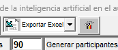

Gesform
Una vegada finalitzat el perÃode de CONFIRMACIÓ, cal ordenar els participants i publicar les llistes definitives.Â
Abans de començar caldrà Extintor/Despublicar internet – A la part inferior apareixerà el quadret de Publicar Internet sense marcar.Â

Una vegada despublicat cal anar a Extintor/Gestión Solicitud de Participantes
I anem a ordenar – deixant els parà metres que apareixen.
 Â
En la columna Descripción Estado tindrem als participants segons el seu estat:
- Confirmado – Confirmat amb plaça
- Conf provisional – Confirmat sense plaça (espera)
- Excluido
- Inicial – No han fet res abans estaven en lista d’espera
- Seleccionado – No han fet res, abans estaven en confirmat
- Renuncia
Mirem si s’ha passat algun en la creació de les llistes provisionals que com a participant tenia el nom del coordinador. Ordenem als participants, si no estem segurs filtrem. Si s’ha fet correctament no hauria d’estar cap participant amb el nom del/de la Coordinador/a.Â
Si queda algú donem doble clic al nom i s’obrirà una finestra amb les dades de la persona que hi ha darrere d’aquesta inscripció.Â

Copiem el DNI de la persona que hi ha en l’apartat de Observaciones i lo copiamos en la casilla del DNI de Persona (de la mateixa finestra), si no apareix és que no és docent o encara no està donat d’alta. Caldria trucar per vore la situació en la que es troba, mirar amb aquesta situació quin barem tindria i si no entra a l'acció formativa – Eliminar el registre. Si entraria cal demanar-li justificació de la seua situació (per exemple nómina, certificat de secretaria, ovidoc, etc…) i enviar mail per l´alta a: compteformacio@gva.es segons el document PROTOCOL_INCORPORACIO_DOCENTS_GESFORM_rev270325.pdf [Descà rrega d'arxiu] i DADES_INCORPORACIO_DOCENTS_GESFORM_rev270325.pdf [Descà rrega d'arxiu]amb firma digital. Aquest últim document es pot sustituir pel de CODI_DADES_PONENTS_NOM.pdf sempre que tinga la firma digital.
Durant la formació hem de revisar que totes les dades dels participants són correctes. És molt important que el nom y cognom dels participants estiguen en majúscules. En cas d'haver algú participant en minúscules hem d'enviar un correu a compteformacio@gva.es. Les assessories no podem modificar cap informació de persones en Gesform.
Una vegada ja tenim tots els participants amb la identitat correcta. Filtrem per confirmados i tindrem els confirmats i confirmats provisionals.Â
Ordenem de nou per estar segurs.
 Deixem tal qual apareixen els parà metres de l’ordre.
 Donem a Excluir solicitud x solapamiento, per tal que s’eliminen els participants que actualment están en 3 o més formacions i no podrÃen fer el curs. A les finestres que apareixen donem a Aceptar.Â
 Mirem les persones que s’han exclòs per vore si tenen els cursos assignats i és correcta l’exclusió (3 cursos). Fem clic en la persona que volem mirar i posteriorment a la part superior a Ver Solicitudes que interfieren en fechas. Ens apareixerà la finestra per vore els cursos que té aquesta persona.Â
 Ordenem de nou per estar segurs.
 Marquem els participants que hi haurà en l’edició (en aquest cas 90), posem el 90 i cliquem en Marcar Participantes.Â
 Con los 90 marcados exportamos para tener estos participantes.

 Donem ara a Generar Participantes A les següents finestres donem a Aceptar. Finalment donar a Aplicar.Â
Â
    Â
Apareixeran en verd els participants. Â
Si ens hem equivocat i has marcat més participants o li has donat dos cops i hi ha el doble de participants en verd. Caldria eliminar-los tots i tornar a començar, per traure el verd, marquem el nombre de participants que tens en ver i apliquem. Aixà els eliminaria.Â
 Finalment comprovar que estén en Extintor – Participantes Edición
Si l’acció formativa necessita Aules hem de SINCRONIZAR els participants per a que ixquen en Aules. (Següent apartat).
 Tornar a publicar. Comprovar que s’han publicat en la web les llistes.Â
 Una vegada publicat, cal enviar correu als participants per indicar que ja estan els llistats definitius. Model de correu a continuació.
El text per la redacció d’aquest correu és el següent: